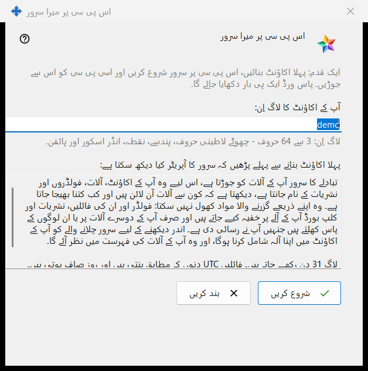
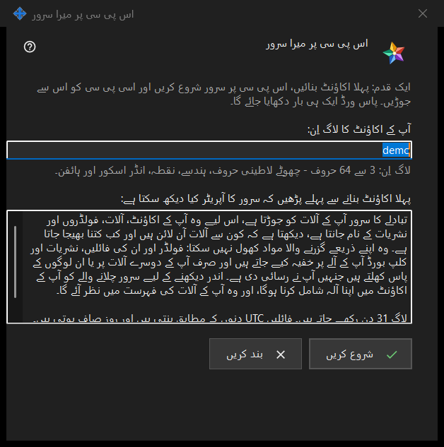

اس پی سی پر میرا سرور
یہ کس مقصد کے لیے ہے
یہ ایک ہی بار میں اس پی سی پر ذاتی Media Exchange Server سیٹ اپ کرتا ہے: پہلا اکاؤنٹ بناتا ہے، سرور شروع کرتا ہے اور اسی پی سی کو اس سے جوڑ دیتا ہے۔ یہ ونڈو Share Manager کی ترتیبات کے Media Exchange Server صفحے کے اس پی سی کو اپنے سرور کے طور پر استعمال کریں.. بٹن سے کھلتی ہے؛ یہ بٹن صرف اسی وقت نظر آتا ہے جب اس پی سی پر کوئی سرور سیٹ اپ نہ ہو۔


اس ترتیب میں
- آپ کے Windows صارف نام سے لیا گیا تجویز کردہ لاگ اِن دیکھ لیں، یا اپنا لاگ اِن لکھیں۔
- وہ بیان پڑھیں جو بتاتا ہے کہ آپریٹر کیا دیکھ سکتا ہے۔
- شروع کریں دبائیں اور چاروں مراحل مکمل ہونے تک انتظار کریں۔
- پاس ورڈ فوراً کاپی کریں، پھر اپنے دوسرے آلات کے لیے فنگر پرنٹ یا کنکشن اسٹرنگ کاپی کریں۔
- بند کریں دبائیں۔
عناصر
لاگ اِن
آپ کے اکاؤنٹ کا لاگ اِن خانے میں 3 سے 64 حروف لکھے جا سکتے ہیں: چھوٹے لاطینی حروف، ہندسے، نقطہ، انڈر اسکور اور ہائفن؛ بڑے حروف خود بخود چھوٹے ہو جاتے ہیں۔ جب تک لکھا ہوا متن لاگ اِن نہیں بن سکتا، خانے کے نیچے کا اشارہ انتباہی رنگ میں رہتا ہے، اور تب تک شروع کریں کچھ نہیں کرتا۔
آپریٹر کیا دیکھ سکتا ہے
صرف پڑھنے والا خانہ (اس کے اوپر کی سطر: پہلا اکاؤنٹ بنانے سے پہلے پڑھیں کہ سرور کا آپریٹر کیا دیکھ سکتا ہے) بتاتا ہے کہ سرور کا آپریٹر اکاؤنٹس، آلات، فولڈروں، نشریات اور کلپ بورڈ کے بارے میں کیا دیکھ سکتا ہے، سرور کیا نہیں پڑھ سکتا، اور لاگ کتنے دن رکھے جاتے ہیں۔ اپنے سرور پر آپریٹر آپ ہی ہیں۔
مراحل اور ناکامیاں
شروع کریں چار مراحل چلاتا ہے اور موجودہ مرحلے کا نام دکھاتا ہے: اکاؤنٹ بنایا جا رہا ہے..، سرور شروع کیا جا رہا ہے..، سرٹیفکیٹ کی جانچ ہو رہی ہے.. اور یہ پی سی جوڑا جا رہا ہے..۔ اس دوران لاگ اِن مقفل رہتا ہے اور ونڈو بند نہیں کی جا سکتی۔ اگر کوئی اکاؤنٹ نہ بنا ہو تو ایک جملہ وجہ بتاتا ہے، مثلاً: یہ اکاؤنٹ پہلے سے موجود ہے - کوئی اور لاگ اِن چنیں۔ لاگ اِن درست کریں اور شروع کریں دوبارہ دبائیں۔
نتیجہ اور پتے
کامیابی پر ونڈو یہ پیغام دکھاتی ہے: ہو گیا: سرور چل رہا ہے، اکاؤنٹ بن گیا ہے اور یہ پی سی اس سے جڑ گیا ہے۔ ساتھ میں یہ سطریں درج ہوتی ہیں: اس پی سی کے لیے پتہ، دوسرے آلات کے لیے پتہ (جب تک یہ پتہ طے نہ ہو اس میں مقرر نہیں - اسے ایکسچینج سرور کی ترتیبات میں درج کریں لکھا رہتا ہے)، لاگ ان، پاس ورڈ (ایک ہی بار دکھایا گیا) اور سرٹیفکیٹ کا فنگر پرنٹ۔ دوسرے آلات کے لیے پتہ طے ہوتے ہی کنکشن اسٹرنگ بھی شامل ہو جاتی ہے۔ اگر سرور شروع نہ ہوا ہو تب بھی اکاؤنٹ موجود رہتا ہے اور اس کا پاس ورڈ نیچے ایک بار دکھایا جاتا ہے۔
پاس ورڈ اور کاپی
پاس ورڈ چھپا رہتا ہے۔ پاس ورڈ دکھائیں اسے ظاہر کرتا ہے؛ پاس ورڈ کاپی کریں اسے محفوظ راستے سے کلپ بورڈ پر رکھتا ہے، جس سے وہ Windows کلپ بورڈ ہسٹری اور کلاؤڈ کلپ بورڈ سے باہر رہتا ہے۔ ونڈو اسے صرف یہی ایک بار دکھاتی ہے، جب تک اس پی سی پر اکاؤنٹس کے پاس ورڈ محفوظ رکھیں آن نہ ہو۔ فنگر پرنٹ کاپی کریں اور اسٹرنگ کاپی کریں عام کاپی ہیں: ان میں سے کسی میں پاس ورڈ نہیں ہوتا۔ دوسرے آلات کو پتہ، لاگ ان، پاس ورڈ اور فنگر پرنٹ چاہیے؛ پہلے کنکشن پر وہ فنگر پرنٹ کا موازنہ کرتے ہیں۔
بند کرنا
اگر پاس ورڈ نہ کاپی کیا گیا، نہ دکھایا گیا اور نہ اس پی سی پر محفوظ کیا گیا، تو بند کریں پوچھتا ہے: پاس ورڈ کاپی کیے بغیر بند کریں؟ طے شدہ جواب نہیں ہے، کیونکہ پاس ورڈ دوبارہ نہیں دکھایا جا سکتا، صرف ری سیٹ کیا جا سکتا ہے۔
مینیجر کی ترتیبات · SFTP اشتراک کی ترتیبات · ایکسچینج سرور کی ترتیبات